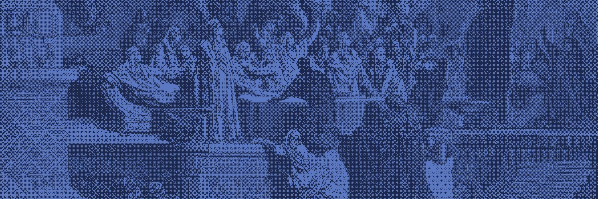
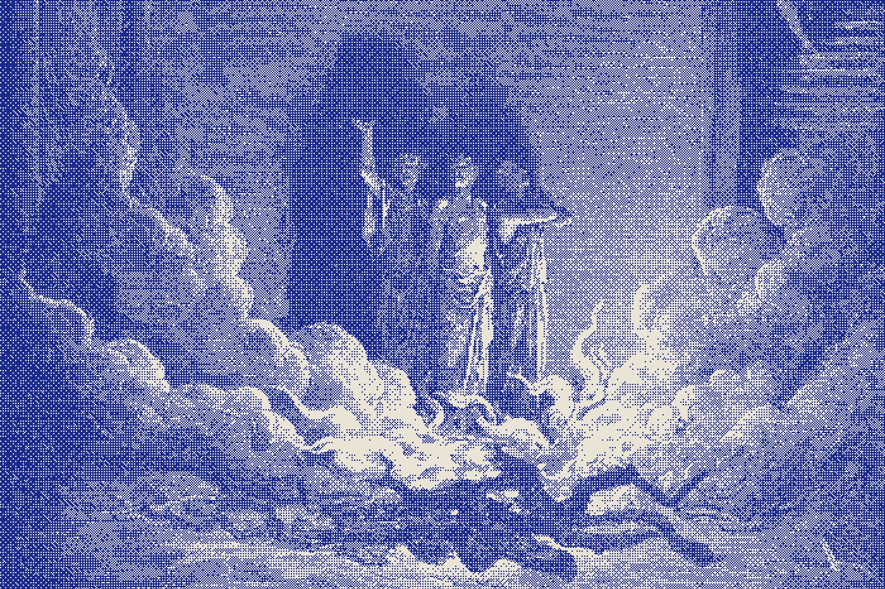

vLLM Now Sizes Its Own KV Cache
There is a set of decisions in local inference that used to be yours: how much memory to hand the KV cache, what numeric precision to accumulate in, and which silicon runs the first phase of a request versus the last. This week three separate projects moved those decisions into the software.
vLLM v0.34.0 landed on November 16 with 1,061 commits from 412 contributors. The headline is a default change. Extensible KV cache is now on, and the server sizes the cache from the memory actually free after warmup rather than from a number you pass in, so the release notes now tell most people to remove gpu_memory_utilization from their configs entirely. On a fixed box serving long context, that is less guessing and fewer out of memory surprises at load.
The same release removes the old path. Model Runner V1 is gone and V2 is the only GPU runner, so V1 logits processors now fail at startup. The default block size moves from 16 to 64, the ROCm 7.2 images are dropped for ROCm 10.0, and huggingface_hub 2.0.0 or newer is required. Read the upgrade table before you pull, because a restart that dies at import is a worse surprise than a slow benchmark.
What you get for reading it is measured at the top of the range: up to 1.95x faster decode on a large model running on GB200 class hardware, up to 1.6x throughput on GLM-5.3-Flash, and 1.24 to 1.40x faster time to first token on long prompts. Those are vendor figures, so treat them as a ceiling. Ten models were added, including the trillion parameter open weight Mistral Large 4.
llama.cpp made the same kind of move. A CUDA change merged on November 18 classifies your GPU by SKU and picks numeric precision for it: GeForce cards keep FP16 inputs and accumulation on eligible quantized operations, while professional cards and Spark prefer BF16 inputs with FP32 accumulation. FP32 accumulation costs throughput on GeForce, so llama.cpp no longer pays that price there just because it is the safer math. Your card gets slightly faster on quantized work with no flag to change.
llama.cpp also shipped a first party chat interface. Running npx @ggml-org/llama-chat serves a local UI, and npx llama-chat build writes it out as static files. It is the project's own front end, and it removes one reason people reached for a third party app.
On the infrastructure side, Cerebras put disaggregated inference into production on November 17: GPUs run the prefill, its wafer scale hardware runs the decode, and the company claims five times more tokens per megawatt at the same generation speed. That figure is a vendor claim and unverified, but the direction matters. Prefill and decode have opposite bottlenecks, compute on one side and memory bandwidth on the other, so splitting them across different silicon is now a datacenter answer rather than a lab experiment. A two box home setup has been doing the same split for a year.

The thread through all of it is that the tools are absorbing the tuning. That is mostly good news when you are building on your own hardware: better defaults, fewer flags to get wrong. It also means your throughput math changes when you upgrade, so read the release notes before a scheduler moves you onto the new version.
Sources
- vLLM, v0.34.0 release notes, November 16, 2026.
- llama.cpp pull request #30672, CUDA SKU aware FP16/BF16 accumulation gating, merged November 18, 2026.
- llama.cpp pull request #32524, run Llama Chat with npx @ggml-org/llama-chat, merged November 18, 2026.
- Cerebras, Cerebras launches disaggregated inference, November 17, 2026.
- Hugging Face, mistralai/Mistral-Large-4-1T-A52B model card.
- npm, @ggml-org/llama-chat.